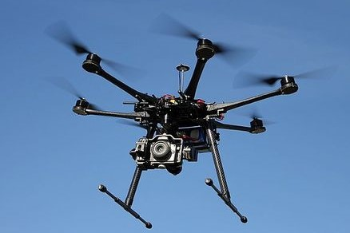
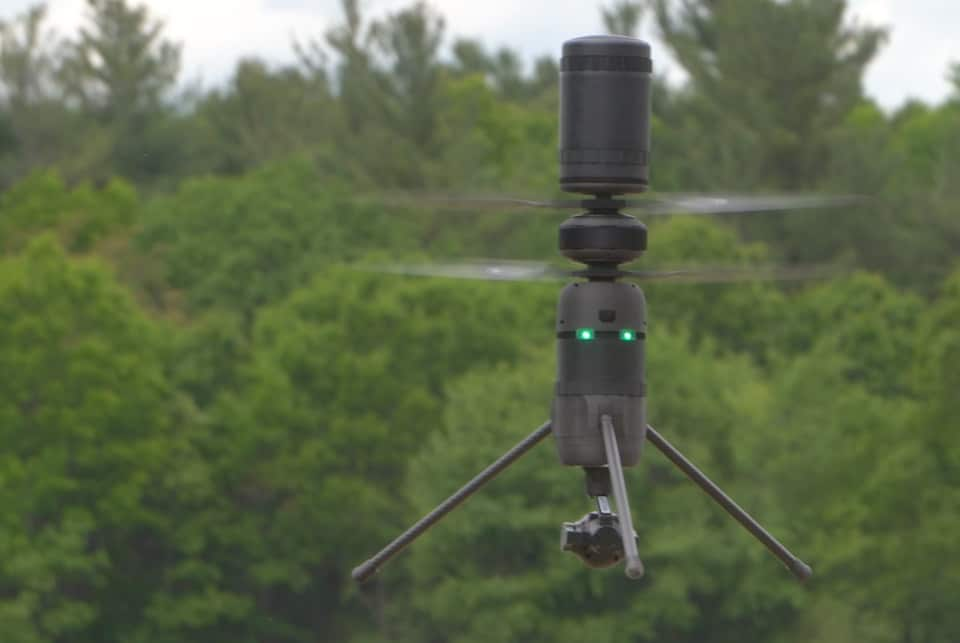

Favoritos
Tricópteros

Cuadricópteros

Hexacópteros
Octocópteros

Coaxiales
Innovaciones en Drones
La industria de los drones ha evolucionado rápidamente, integrando tecnologías como la inteligencia artificial, sensores avanzados y sistemas de navegación autónoma. Estas innovaciones permiten a los drones realizar tareas complejas como la entrega de paquetes, vigilancia, agricultura de precisión, y grabación de contenido multimedia de alta calidad. Las mejoras en la duración de la batería y el control remoto también están impulsando su adopción en una variedad de sectores.
Aplicaciones Actuales
- Agricultura: Monitoreo de cultivos y análisis del terreno.
- Logística: Entrega de paquetes a domicilio.
- Seguridad: Vigilancia de grandes áreas y asistencia en misiones de rescate.
- Cine y Televisión: Grabación de tomas aéreas espectaculares para producciones.
Gracias a estos avances, el futuro de los drones promete soluciones más eficientes y sostenibles en múltiples áreas de la vida cotidiana.
Cómo se utilizan en el día a día
Drones de Fotografía y Videografía
- Descripción: Drones equipados con cámaras de alta calidad para capturar imágenes y videos en el aire.
- Usos Comunes: Fotografía aérea, filmación de eventos, creación de contenido para redes sociales.
Drones de Carreras (Racing Drones)
- Descripción: Drones diseñados para velocidad y maniobrabilidad, ideales para carreras.
- Usos Comunes: Competencias de drones, simuladores de vuelo en primera persona (FPV).
Drones para Inspección
- Descripción: Drones equipados con cámaras y sensores especializados para inspeccionar estructuras y áreas difíciles de alcanzar.
- Usos Comunes: Inspección de torres de telecomunicaciones, líneas eléctricas, puentes, y edificios.
Drones de Agricultura
- Descripción: Drones diseñados para realizar tareas en la agricultura, como monitoreo de cultivos y aplicación de fertilizantes.
- Usos Comunes: Monitoreo de la salud de los cultivos, fumigación, mapeo de terrenos agrícolas.
Shopping
Te ofrecemos una amplia gama de drones diseñados para transformar tu visión del mundo desde las alturas. Ya seas un entusiasta de la fotografía aérea, un aventurero en busca de nuevas perspectivas, o un profesional que necesita herramientas avanzadas para su trabajo, nuestros drones están equipados con la tecnología más avanzada para brindarte un rendimiento excepcional. Con características innovadoras como cámaras de alta resolución, sistemas de navegación precisos y tiempos de vuelo prolongados, nuestros drones garantizan una experiencia de vuelo envolvente y de alta calidad. Explora nuestro catálogo y encuentra el drone perfecto para tus necesidades, y prepárate para elevar tu experiencia a nuevas alturas. ¡La aventura comienza aquí!
Drones disponibles
-
Tricópteros
$500
Comprar Drone -
Cuadricópteros
$750
Comprar Drone -
Hexacópteros
$1,000
Comprar Drone -
Octocópteros
$1,250
Comprar Drone -
Coaxiales
$1,500
Comprar Drone